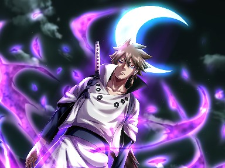
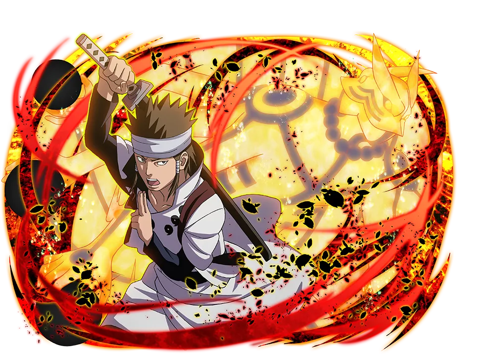
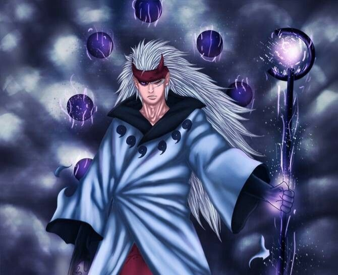
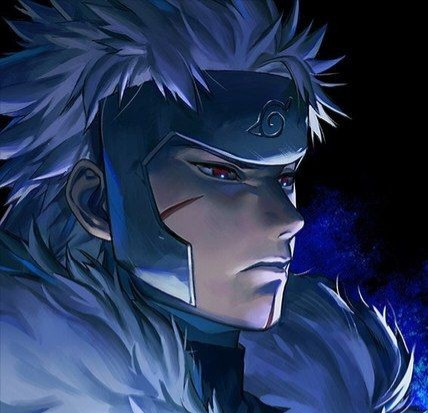
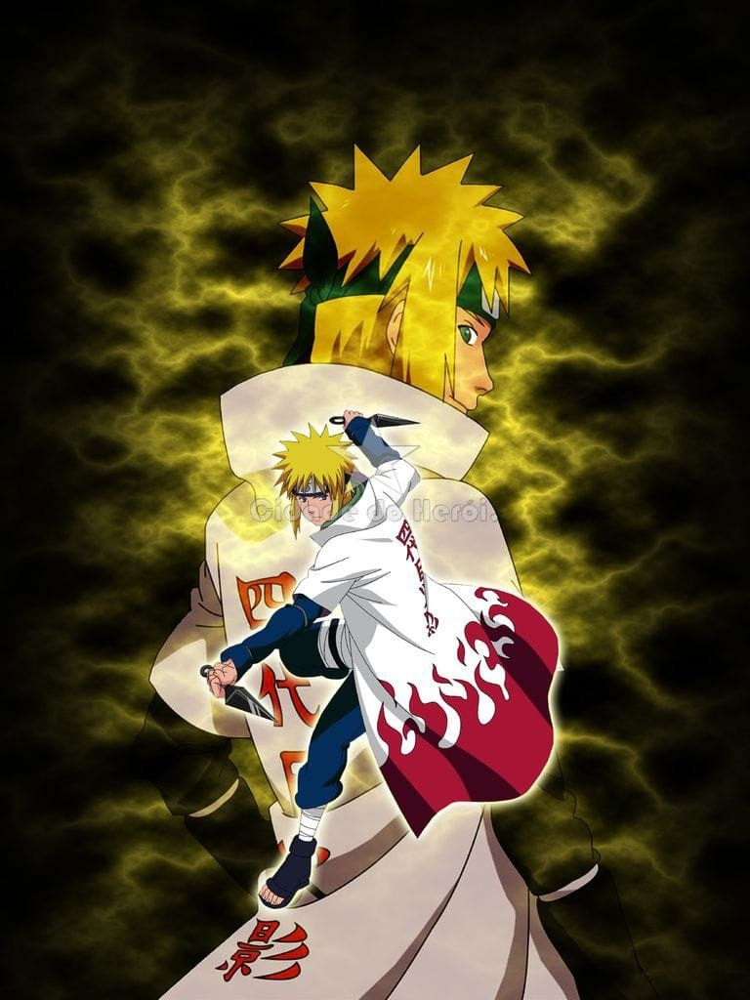
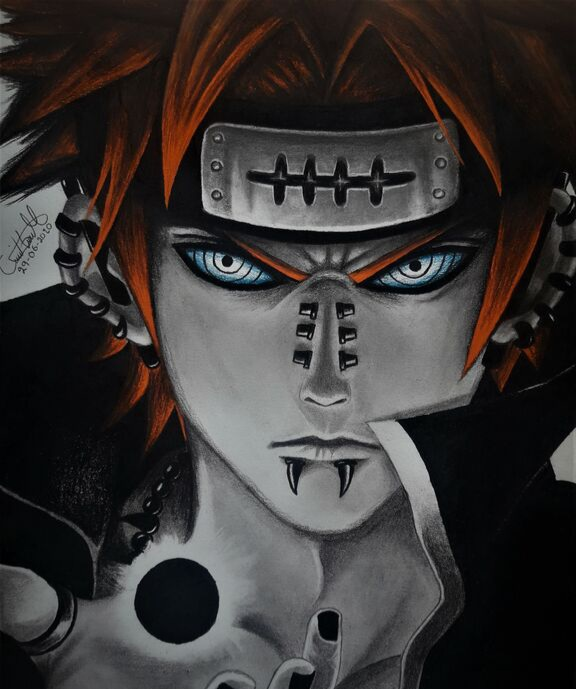
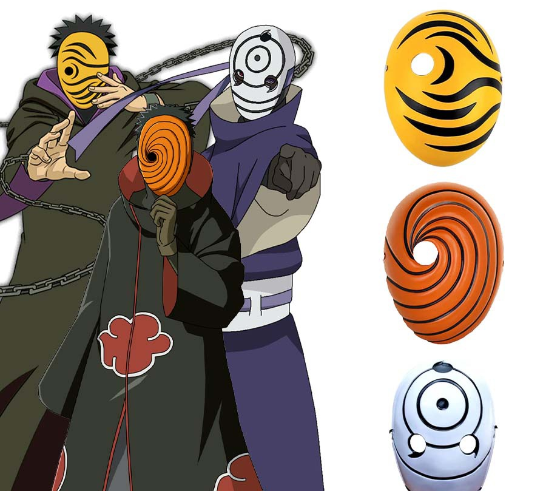
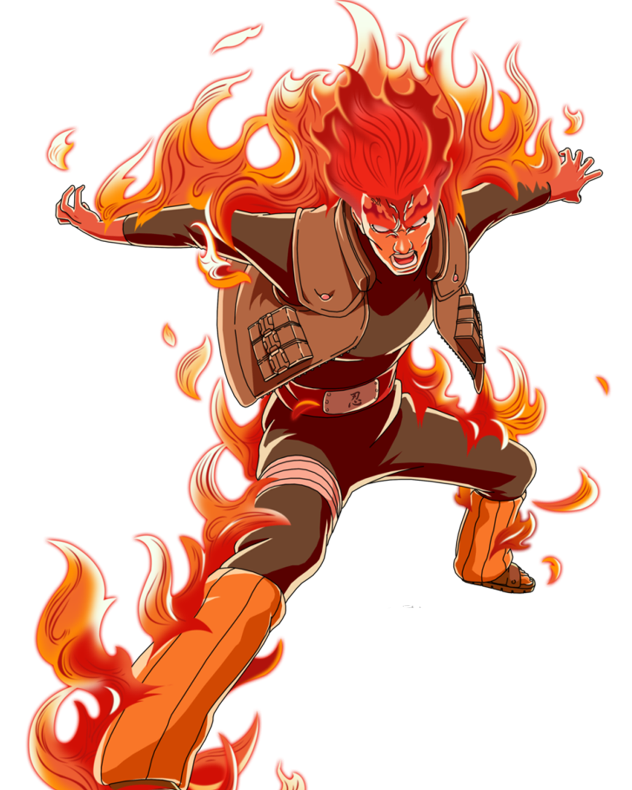
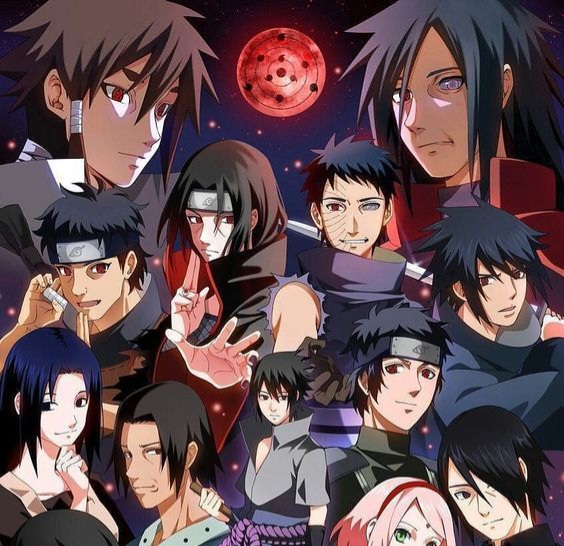
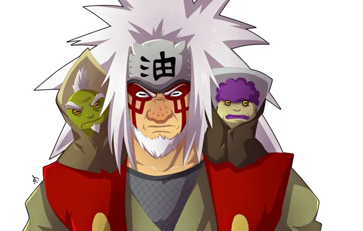

.jpg)
Le Moin reculer, l'Etre qui transcende les cieux, L'Homme qui enseignant le maniement
du chakra, le Precursseur des arts ninjas, le Père de tous les ninjas:
HAGOROMO OTSUTSUKI ALIAS L'ERMTE RIKUDO

Le génie, l'homme qui inventa les moudras le 1 er humain à utiliser le Ninjutsu,
père fondateur du clan le puissant sur terre c'est le 1er Uchiwa son nom:
INDRA UCHIWA

Un raté de naissance mais croyant en l'amour et guidé par
ses amis, devenu le ninja le plus puissant sur terre. Père
fondateur du clans le puissant qui a jamais existé sur terre
ASHURA SINJU

L'etre égale au ciel, L'homme qui transcendant sa nature humaine devenant un dieu,
le possesseur du linbo ,le famtome des UCHIWA JUBIDARAA
de son nom:
MADARAA UCHIWA

L'ange blanc de la mort des UCHIWA, l'homme aux multiples techniques interdites
le père fondateur des organistions de KONOHA, le meurtrier des frère
OR et ARGENT . J'ai nommé le hokage 2ème du nom :
TOBIRAMA SINJU

Dans la dimension de la vitesse pure ce trouvre l'homme le plus rapide du monde, celui qui à mit
fin à la 3ème grande guerre ninja en tuant 27 ninjas en 1 seconde. ECLAIRE JAUNE DE KONOHA
Le denomé:
MINATO NAMIKAZE

Au coucher du soleil se cache un dieu déchus, Père de la souffrance, l'etre qui comprit les hommes et
le monde une fois vécu la souffrance.
Le surnomé PAIN de l'AKATSUKI
de son nom:
NAGATO USUMAKI

Dans l'hombre du soleil, un etre en eclat, un manipulateur aux multiple visage, l'ange masqué de la mort,
le garçon symbole de génerositer et d'honneur à vu son rève sombré dans le déspoire.
OBITO UCHIWA

Dans le village caché des feuilles,un garçon depouvu de Ninjutsu neamoins
minnie d'une volonté de fer, un apothéose de la jeunèsse, rélévateur de toutes les défits
L'ENBRAGEUSE PANTAIRE DE JADE DE KONOHA de son nom:
GAI MAITO

Dans l'hombre des feuilles un clan en eclat, une traison cruelle, un destin sans lendemain, L'UCHIWA
symbole de puissance et d'honneur à vu son histoire sombré dans la douleur.
Le clan le plus puissant sur terre
UCHIWA
.jpg)
Le village ou le clan tirailler entre le deux. Que choisir ?
Celui qui a massacré son clan
en une seul nuit. Sacrifia son propre destin pour le bien de l'Humanité. le dieu du Genjutsu ALIAS :
LE SOLO KING:
ITACHI UCHIWA

Groooop! Groooop! Groooop!
L'orphelin sans nom. Celui dont les legendes parlera,
le meilleur instructeur. Celui le lourd destin d'entrainer l'enfant
de la proffessie le plus puissance des 3 ninja legendaire L'Ermite legendaire
des crapauds
JIRAYA
Si tu veut etre un shinobie toi aussi alors inscrit toi!
Pour un jour avoir
ta propre histoire.